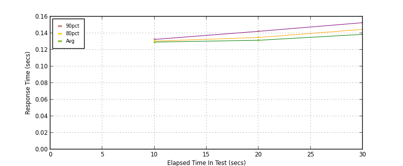
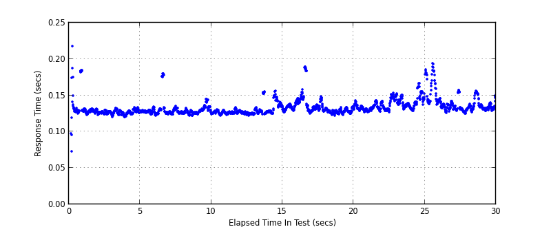
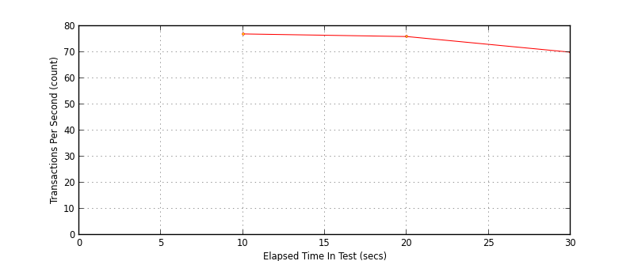

Performance Results Report
Summary
transactions: 2253
errors: 0
run time: 30 secs
rampup: 0 secs
test start: 2015-02-18 16:11:01
test finish: 2015-02-18 16:11:31
time-series interval: 10 secs
workload configuration:
| group name | threads | script name |
|---|
| user_group-1 | 10 | v_user.py |
All Transactions
Transaction Response Summary (secs)
| count | min | avg | 80pct | 90pct | 95pct | max | stdev |
|---|
| 2253 | 0.073 | 0.133 | 0.137 | 0.145 | 0.153 | 0.218 | 0.011 |
Interval Details (secs)
| interval | count | rate | min | avg | 80pct | 90pct | 95pct | max | stdev |
|---|
| 1 | 774 | 77.40 | 0.073 | 0.129 | 0.130 | 0.133 | 0.136 | 0.218 | 0.010 |
| 2 | 760 | 76.00 | 0.122 | 0.131 | 0.135 | 0.142 | 0.148 | 0.189 | 0.009 |
| 3 | 709 | 70.90 | 0.125 | 0.139 | 0.145 | 0.153 | 0.161 | 0.194 | 0.011 |
Graphs
Response Time: 10 sec time-series

Response Time: raw data (all points)

Throughput: 5 sec time-series

Custom Timer: Write Request
Timer Summary (secs)
| count | min | avg | 80pct | 90pct | 95pct | max | stdev |
|---|
| 2243 | 0.051 | 0.111 | 0.115 | 0.123 | 0.131 | 0.196 | 0.011 |
Interval Details (secs)
| interval | count | rate | min | avg | 80pct | 90pct | 95pct | max | stdev |
|---|
| 1 | 774 | 77.40 | 0.051 | 0.107 | 0.108 | 0.110 | 0.114 | 0.196 | 0.010 |
| 2 | 760 | 76.00 | 0.100 | 0.109 | 0.113 | 0.120 | 0.126 | 0.167 | 0.009 |
| 3 | 709 | 70.90 | 0.103 | 0.117 | 0.123 | 0.131 | 0.139 | 0.172 | 0.011 |
Graphs
Response Time: 10 sec time-series

Response Time: raw data (all points)

Throughput: 10 sec time-series